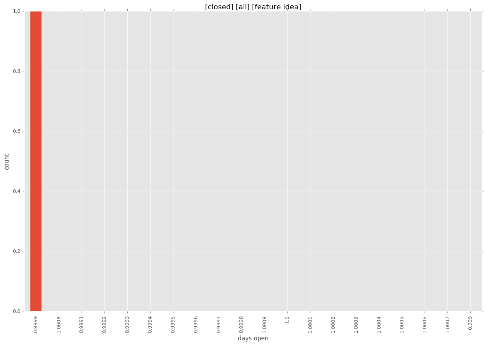
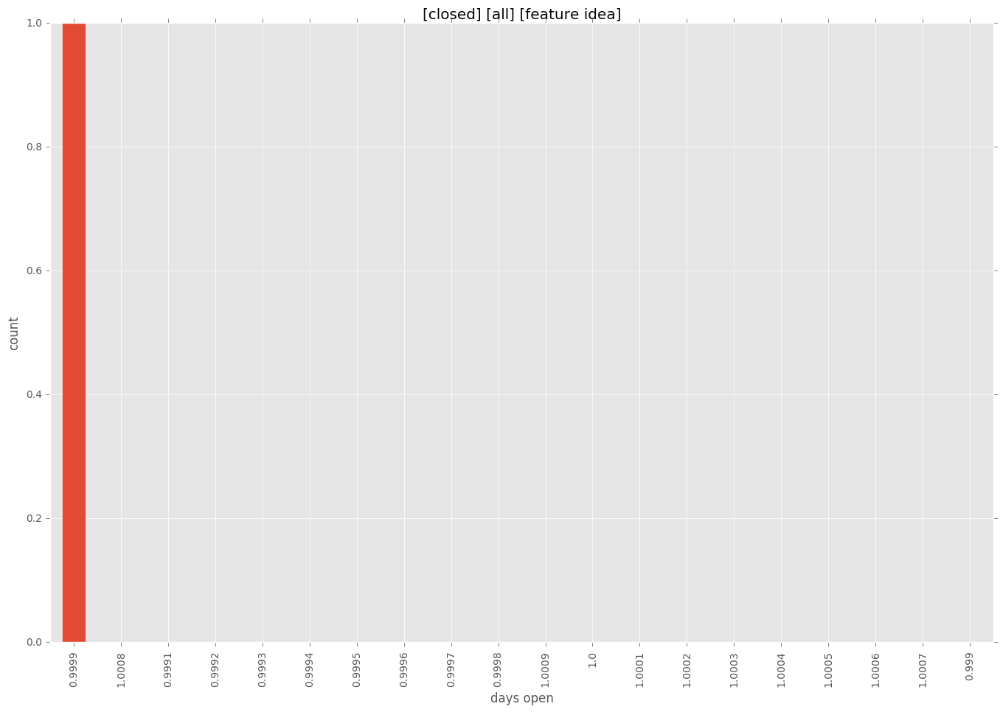

total issue counts
feature pull request: 1
pullrequest: 13
docs pull request: 4
bugfix pull request: 6
feature idea: 1
issue: 1
new plugin: 2
issue history
pullrequest history
days open by issue type
bugfix pull request
count: 12
std: 10.8278540922
min: 0
max: 27
median: 0.0
mean: 6.83333333333
all
count: 26
std: 7.92551866781
min: 0
max: 27
median: 1.0
mean: 4.42307692308
pullrequest
count: 0
std: nan
min: nan
max: nan
median: nan
mean: nan
docs pull request
count: 8
std: 0.755928946018
min: 0
max: 2
median: 1.0
mean: 1.0
feature pull request
count: 2
std: 0.0
min: 6
max: 6
median: 6.0
mean: 6.0
feature idea
count: 1
std: nan
min: 1
max: 1
median: 1.0
mean: 1.0
issue
count: 0
std: nan
min: nan
max: nan
median: nan
mean: nan
new plugin
count: 3
std: 6.92820323028
min: 0
max: 12
median: 0.0
mean: 4.0
closures grouped by total days open

 
